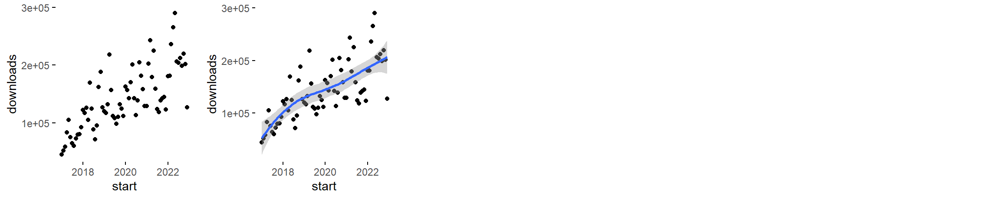
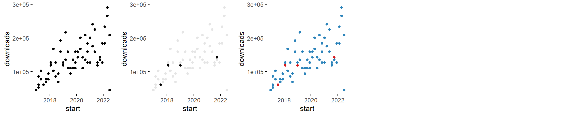
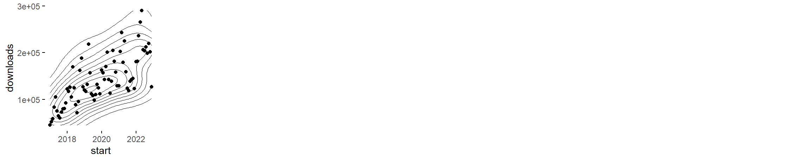
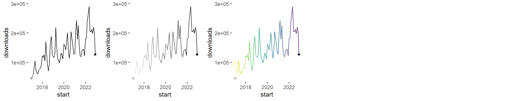

1var_Specimen
Pere Millán
20/5/2020
Specimen of the graphics that only require 1 input variable and that, up to now, are being considered by the brinton’s wideplot(), longplot() and brinton::plotup() functions.
2 numeric


2 numeric = c('scatter plot', 'bw scatter plot', 'color scatter plot')

2 numeric = c('binned scatter plot', 'bw binned scatter plot', 'color binned scatter plot')

2 numeric = c('binned heatmap', 'bw binned heatmap', 'color binned heatmap')

2 numeric = c('hexagonal binned heatmap', 'bw hexagonal binned heatmap', 'color hexagonal binned heatmap')

2 numeric = c('blank', 'bw heatmap', 'color heatmap')

2 numeric = c('contour plot', 'bw contour plot', 'color contour plot')

2 numeric = c('contour plot with data points', 'bw contour plot with data points', 'color contour plot with data points')

2 numeric = c('parallel plot', 'bw parallel plot', 'color parallel plot')

2 numeric = c('unscaled parallel plot', 'unscaled bw parallel plot', 'unscaled color parallel plot')

2 numeric = c('path graph', 'bw path graph', 'color path graph')

2 numeric = c('point-to-point graph', 'bw point-to-point graph', 'color point-to-point graph')

2 numeric = c('point graph', 'bw point graph', 'color point graph')

2 numeric = c('line graph', 'stepped line graph')

2 numeric = c('area graph')

2 numeric = c('stepped area graph', 'bw stepped area graph', 'color stepped area graph')

2 numeric = c('blank', 'bw heatmap', 'color heatmap')

2 numeric = c('blank', 'bw seq. stripe graph', 'color seq. stripe graph')

2 numeric = c('histogram', 'bw histogram', 'color histogram')

2 numeric = c('freq. polygon'))

2 numeric = c('density plot', 'filled density plot')

2 numeric = c('violin plot', 'filled violin plot')

2 numeric = c('box plot'))

2 numeric = c('ecdf plot', 'point ecdf plot', 'stepped ecdf plot')2 datetime


2 datetime = c('scatter plot', 'scatter plot with trend line')

2 datetime = c('binned scatter plot', 'bw binned scatter plot', 'color binned scatter plot')

2 datetime = c('blank', 'bw heatmap', 'color heatmap')

2 datetime = c('contour plot with data points')

2 datetime = c('path graph', 'bw path graph', 'color path graph')

2 datetime = c('point-to-point graph', 'bw point-to-point graph', 'color point-to-point graph')numeric~datetime

numeric~datetime = c('scatter plot', 'scatter plot with trend line')
numeric~datetime = c('binned scatter plot', 'bw binned scatter plot', 'color binned scatter plot')numeric~datetime = c('blank', 'bw heatmap', 'color heatmap')
numeric~datetime = c('contour plot with data points')
numeric~datetime = c('path graph', 'bw path graph', 'color path graph')

numeric~datetime = c('point-to-point graph', 'bw point-to-point graph', 'color point-to-point graph')numeric~factor


numeric~factor = c('path graph', 'point graph', 'tile plot')

numeric~factor = c('binned heatmap', 'bw binned heatmap', 'color binned heatmap')

numeric~factor = c('violin plot', 'filled violin plot')

numeric~factor = c('box plot')

numeric~factor = c('blank', 'bw stacked histogram', 'color stacked histogram')

numeric~factor = c('blank', 'bw 100% stacked histogram', 'color 100% stacked histogram')

numeric~factor = c('density plot', 'blank', 'color density plot')

numeric~factor = c('blank', 'filled density plot', 'color filled density plot')